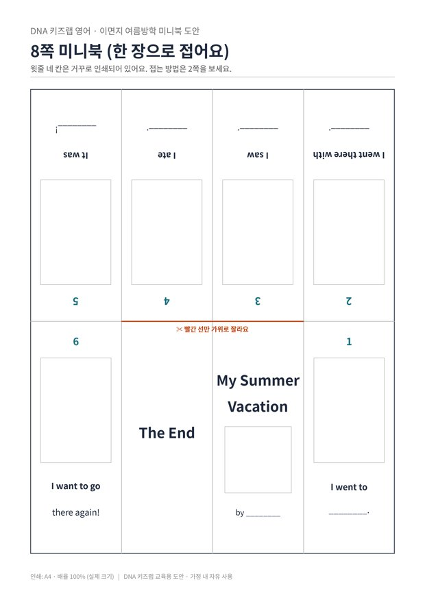

전체 단원 › 실험·활동 › 5학년 2학기 영어
여름방학 미니북

이면지 한 장을 접어 8쪽짜리 작은 책을 만들고, 방학 동안 한 일을 영어 그림책으로 남겨요.
50분 · 난이도 ★★★ 도전
준비물
- 미니북 도안 — 8쪽 틀과 접는 법·과거형 단어 (A4 2장). 1쪽만 인쇄해 접어요.
- 가위 — 가운데 빨간 선 하나만 잘라요
- 색연필, 방학 사진 — 그림을 그리거나 작게 인쇄한 사진을 붙여요
- 풀 — 사진을 붙여요
하는 방법
- 미니북 접기
도안 1쪽을 인쇄해 2쪽의 접는 법대로 8칸 자국을 내고, 가운데 빨간 선만 잘라 책 모양으로 접어요. 윗줄이 거꾸로 인쇄된 것은 접으면 바르게 보이게 하려는 거예요. - 방학 떠올리기
방학 사진을 함께 보며 어디에 갔는지, 누구와 갔는지, 무엇을 보고 먹었는지 한국어로 이야기해요. - 빈칸 채우기
쪽마다 이미 적힌 문장의 빈칸을 채워요. 예: I went to the beach. 모르는 낱말은 사전 앱으로 함께 찾아요. - 그림 넣기
네모 칸에 그림을 그리거나 사진을 붙이고, 표지에 이름을 써요. - 작가 낭독회
완성한 책을 가족 앞에서 읽어 주어요. 영상으로 찍어 두면 방학 기념이 돼요.
5~6학년 영어에서는 지난 일을 묻고 답하며, 간단한 글로 쓰는 활동을 합니다. 빈칸이 있는 문장 틀을 주면 아이가 '쓸 거리'에만 집중할 수 있어 영어 쓰기 부담이 크게 줄어요. 철자가 조금 틀려도 끝까지 완성한 것을 먼저 칭찬해 주세요.
학교 교육과정 연결
- [6영02-06] 자신의 감정이나 의견, 경험이나 계획을 간단한 문장으로 표현한다.
- [6영02-08] 예시문을 참고하여 목적에 맞는 간단한 글을 쓴다.